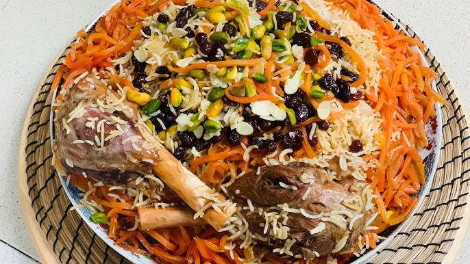

"Welcome to our Recipe Book Haven, your ultimate destination for culinary inspiration! Whether you're a seasoned chef or a home cook looking to spice up your meals, our collection of recipes has something for everyone. From quick weeknight dinners to extravagant holiday feasts, our site offers a variety of recipes, complete with step-by-step instructions, tips, and beautiful photos to guide you along the way. Explore new flavors, try exciting cuisines, and create delicious memories—your next favorite recipe is just a click away!"
"Afghan Kabuli Pilaw is a beloved and flavorful traditional dish from Afghanistan, often considered the country's national dish. This aromatic rice dish features long-grain basmati rice, cooked to perfection with a mixture of tender lamb or chicken, carrots, raisins, and a blend of rich spices like cinnamon, cardamom, and cumin. The result is a delightful balance of savory, sweet, and aromatic flavors, creating a truly satisfying meal. Qabuli Palaw is usually served during special occasions, festive gatherings, and family celebrations, offering a beautiful mix of textures and flavors that represent the warmth and hospitality of Afghan culture."
